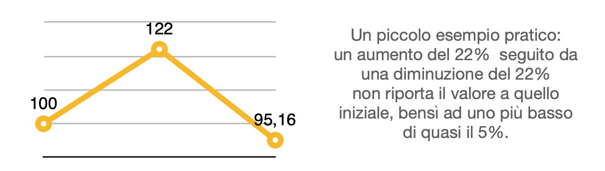

Sarà capitato a tutti di vedere quei manifesti pubblicitari o spot televisivi che parlano del No-IVA, campagna di sconti attuata da molte marche e catene, principalmente di mobili ed elettrodomestici. Per anni anche io ci sono passato davanti senza dare troppo peso alla cosa, ma le recenti e più insistenti promozioni hanno sollevato alcuni dubbi e riflessioni. Quella che potrebbe sembrare una formula come un’altra, risulta prima di tutto un tentativo di proporre dei saldi fuori dal periodo ufficiale, e già solo questo basterebbe per un articolo di due pagine: che senso ha fare i saldi ufficiali, ma soprattutto che senso ha che di fatto sia vietato solo l’uso del termine durante gli altri mesi dell’anno, visto che la stessa pratica può essere tranquillamente attuata, solamente con un nome modificato? Insomma, visto che avete voluto il libero mercato, ora vi tocca pure la concorrenza sugli sconti, no? Magari una concorrenza leale, non basata su questi trucchetti semantici, con la gara a chi è più furbo nello scovare la formula più originale per accaparrarsi i clienti. Devo però ammettere che trattato in questo modo l’argomento è poco interessante: sarebbe necessario parlarne con qualcuno del settore, soprattutto con chi dovrebbe occuparsi del controllo e delle sanzioni, altrimenti risulta solo un banale sfogo da frustrato su facebook. Ci sono altre due riflessioni che vorrei approfondire maggiormente. La prima riguarda la scarsa conoscenza media della matematica basilare da parte della clientela, che porta la grande distribuzione ad architettare inganni più o meno complessi, dai semplici trucchetti psicologici in stile “0.99” che ci portano istintivamente a sottostimare il prezzo, fino ai finti sconti o ai giochi sulle percentuali. Ed è esattamente quello che avviene con il No-IVA, con la genialità del fatto che in questo caso la percentuale dello sconto non viene esplicitata mai, ma solo lasciata intendere. Immagino che, con l’imposta al 22%, risulti naturale pensare che questa offerta riduca appunto di tale percentuale il prezzo dei prodotti. Il problema è che in questo caso non stiamo riducendo il prezzo, ma evitando di aumentarlo, e nel caso delle percentuali la direzione in cui si va è determinante.

Scontare l’IVA è equivalente al 18% circa del prezzo finale, che non solo è inferiore di oltre il 4% rispetto a quanto lasciato intendere (ricordiamo che c’è gente che impazzisce per molto meno, ad esempio per i Punti Fedeltà che normalmente corrispondono all’1-2% della spesa media), ma è anche inferiore alla soglia psicologica del 20%, con un impatto del tutto diverso sulla percezione da parte del consumatore. Fateci caso, di esempi come questi ce ne sono numerosi, dalle supervalutazioni dell’usato sommate agli incentivi nel mondo delle automobili, fino alle campagne di PoltroneSofà dove presentano quegli sconti composti del 50%+20% che non è ben chiaro se vanno sommati o applicati in successione, con la differenza che con la stessa dicitura il risultato può variare di un buon 10%. Insomma, la gara sembra essere a chi si inventa lo sconto più complesso e opaco possibile, tanto la clientela ragiona sempre meno ed è vista come una risorsa da spremere e di cui approfittare. L’ultimo tema di questo articolo è il più profondo ed etico, non riguarda il mondo delle vendite ma la nostra società: le aziende e il marketing privato hanno iniziato a prendersela apertamente con i servizi pubblici, lo Stato e le tasse. Già alcuni decenni fa le tv private di Mediaset si facevano beffa dei canali pubblici con “Non è la Rai” e altri format simili, mostrando la superiorità del libero mercato su quello che era un arretrato sistema caratterizzato da molti difetti e lacune. Più recentemente abbiamo visto alcuni ambiti, uno su tutti quello della sanità, venire invasi da soluzioni private, presentate come un’alternativa migliore del pubblico, più costosa certo, ma necessaria in un Paese dove le infrastrutture non funzionano. Nessuno aveva però ancora osato, anche se solo a livello teorico in questo caso, attaccare la fiscalità in modo così chiaro e limpido. Forse anche per via del clima di questi ultimi anni, con un forte sentimento di antipolitica, di rabbia nei confronti delle istituzioni viste come inefficienti, di percezione dello Stato sempre più negativa, evidentemente i grafici e i pubblicitari devono aver convenuto che fosse la scelta più vantaggiosa cavalcare tale onda, schierarsi contro le istituzioni per mostrarsi dalla parte dei cittadini. Per sembrare alleati di quegli stessi consumatori che mirano solamente a circuire e manipolare. Ma l’aspetto più grave è che, lentamente e in modo apparentemente impercettibile, questo non farà altro che alimentare ulteriormente questi sentimenti del popolo, senza che dall’altra parte avvenga una campagna di sensibilizzazione efficace nel mostrare invece i pregi delle tasse, dei servizi e delle istituzioni pubbliche. Ogni tanto sulla Rai o nei tabelloni delle stazioni appaiono quelle pubblicità-progresso dei vari ministeri, volte ad educare o informare i cittadini in merito a tematiche utili e importanti, per metterli al riparo da pericoli e dipendenze, ma è evidente la disparità di mezzi e risorse, nettamente a favore dei privati, più efficaci nel veicolare il proprio messaggio egoistico e anti-istituzionale. Strano che tutto ciò sia legale, no?